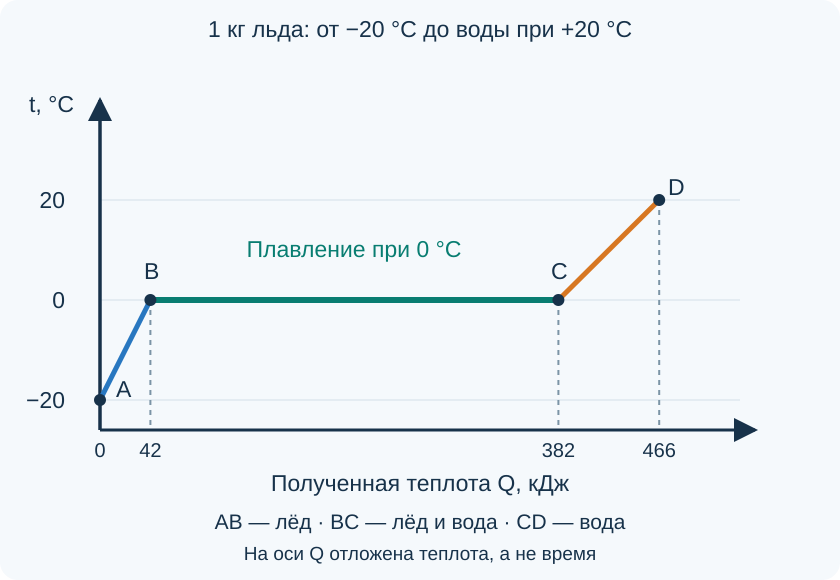

Плавление и отвердевание кристаллических тел. Удельная теплота плавления
Кусочек льда в тёплой комнате сначала нагревается, затем превращается в воду. Но пока лёд тает, температура смеси льда и воды может оставаться неизменной. Куда уходит получаемая энергия, если термометр больше не показывает повышения температуры?
Плавление и отвердевание
При плавлении льда вещество остаётся водой: молекулы воды не превращаются в другие молекулы. Меняются агрегатное состояние и расположение частиц. Это физический процесс, в отличие от химического превращения при сгорании топлива.
Частицы кристалла колеблются около положений равновесия, образующих упорядоченную структуру. В жидкости такого дальнего порядка нет, частицы могут перемещаться относительно друг друга, но остаются близко и продолжают взаимодействовать. Поэтому жидкость сохраняет объём и принимает форму сосуда.
Температура плавления
Температура плавления — температура, при которой кристаллическое вещество переходит в жидкое состояние. Для чистого вещества при заданном давлении она определённая. У разных веществ температуры плавления различаются.
В обычных школьных задачах о чистой воде при нормальном атмосферном давлении принимают:
Чтобы растопить лёд с температурой ниже нуля, сначала нужно нагреть его до температуры плавления, а затем передавать энергию на само плавление. Достижение \(0\,{}^\circ\text{C}\) ещё не означает, что весь лёд превратился в воду.
При отвердевании происходит обратное: вещество отдаёт энергию. В равновесных условиях кристаллизация чистого вещества идёт при той же температуре, что и плавление. В этой статье не рассматриваем переохлаждение, примеси и изменение давления.
У аморфных тел, например стекла, нет такого чёткого перехода при одной температуре: при нагревании они постепенно размягчаются. Горизонтальный участок плавления на графике ниже относится к чистому кристаллическому веществу.
Почему энергия передаётся, а температура не меняется
Температура связана с интенсивностью теплового движения частиц. Внутренняя энергия зависит также от их взаимодействия и взаимного расположения.
При плавлении увеличивается внутренняя энергия вещества: разрушается упорядоченная кристаллическая структура, меняется характер взаимного расположения частиц. Энергия поступает, хотя температура не растёт. Это не означает, что частицы перестали двигаться или взаимодействовать.
При кристаллизации формируется упорядоченная структура, внутренняя энергия уменьшается и энергия передаётся окружающим телам. Поэтому для продолжения отвердевания необходимо отводить выделяющуюся теплоту.
Удельная теплота плавления
Для плавления разных веществ одинаковой массы требуется разное количество теплоты. Это свойство характеризует величина \(\lambda\) — греческая буква «лямбда».
В расчётах этой статьи используем учебное значение для льда:
Это означает: для превращения \(1\ \text{кг}\) льда при \(0\,{}^\circ\text{C}\) в воду при \(0\,{}^\circ\text{C}\) требуется \(340\ \text{кДж}\). Нагревание льда до нуля или воды после плавления в эту величину не входит. Если в условии или таблице учебника дано другое значение, используй его.
Расчёт количества теплоты
При плавлении массы \(m\), уже находящейся при температуре плавления, вещество получает:
При отвердевании той же массы того же вещества при температуре кристаллизации выделяется такое же по величине количество теплоты:
Здесь и полученная, и отданная теплота записаны как положительные величины. Направление передачи энергии указываем словами: при плавлении вещество получает энергию, при отвердевании — отдаёт.
Пример 1. Плавление льда при нуле градусов
Сколько энергии нужно для плавления?
Растопим \(200\ \text{г}\) льда, уже имеющего температуру \(0\,{}^\circ\text{C}\). Полученная вода также имеет температуру \(0\,{}^\circ\text{C}\). Потерями энергии пренебрежём.
Переведём массу в килограммы: \(m=0{,}20\ \text{кг}\).
Если эта масса воды при нуле градусов превратится в лёд при нуле градусов, она отдаст \(68\ \text{кДж}\).
График нагревания льда и плавления
Рассмотрим \(1\ \text{кг}\) льда при \(-20\,{}^\circ\text{C}\). Будем передавать ему энергию, пока весь лёд не растает, а вода не нагреется до \(20\,{}^\circ\text{C}\). Считаем, что энергия равномерно распределяется по образцу, потерями и нагреванием сосуда пренебрегаем.


На горизонтальной оси отложено накопленное количество полученной теплоты, а не время. Для графика приняты \(c_{\text{льда}}=2100\ \text{Дж}/(\text{кг}\cdot{}^\circ\text{C})\), \(c_{\text{воды}}=4200\ \text{Дж}/(\text{кг}\cdot{}^\circ\text{C})\) и \(\lambda=340\ \text{кДж/кг}\).
| Участок | Что происходит | Температура | Расчёт теплоты на участке |
|---|---|---|---|
| \(AB\) | Нагревается лёд | Повышается от −20 до 0 °C | \(Q_1=c_{\text{льда}}m\Delta t\) |
| \(BC\) | Лёд превращается в воду | Остаётся равной 0 °C | \(Q_2=\lambda m\) |
| \(CD\) | Нагревается вода | Повышается от 0 до 20 °C | \(Q_3=c_{\text{воды}}m\Delta t\) |
На участке \(BC\) количество воды увеличивается, а количество льда уменьшается. В точке \(C\) плавление завершено. Длина горизонтального участка по оси \(Q\) показывает теплоту, затраченную именно на плавление, а не на весь процесс.
При обратном процессе сначала охлаждается вода. Затем при кристаллизации температура сохраняется, пока жидкость превращается в лёд и отдаёт энергию. После завершения кристаллизации может охлаждаться сам лёд.
Пример 2. Нагревание, плавление и нагревание воды
Разделим процесс на три этапа
Сколько теплоты нужно, чтобы из \(100\ \text{г}\) льда при \(-10\,{}^\circ\text{C}\) получить воду при \(20\,{}^\circ\text{C}\)? Потерями и теплоёмкостью сосуда пренебрегаем.
\(m=0{,}10\ \text{кг}\). Сначала нагреваем лёд до нуля:
Затем плавим лёд при нуле:
После этого нагреваем воду:
Складываем энергии трёх этапов:
Применять одну теплоёмкость ко всему изменению температуры от −10 до 20 °C нельзя: до плавления нагревается лёд, после — вода, а на переход между состояниями требуется отдельная энергия.
Если растаял не весь лёд
Пусть лёд уже находился при температуре плавления и получил количество теплоты \(Q\), которого недостаточно для плавления всей массы. Масса растаявшего льда:
В этом случае \(m_{\text{раст}}\) — только растаявшая часть, а не первоначальная масса образца. Пока остаются лёд и вода в равновесии, температура смеси сохраняется около \(0\,{}^\circ\text{C}\) при принятых условиях.
Если лёд первоначально был холоднее нуля, сначала нужно вычесть энергию его нагревания до температуры плавления. Только оставшуюся энергию можно использовать в формуле массы растаявшей части.
Главное в теме
Плавление требует поступления энергии, а кристаллизация сопровождается её выделением. У чистого кристаллического вещества при постоянном давлении температура во время равновесного фазового перехода не меняется. Для самого перехода используют \(Q=\lambda m\); нагревание и охлаждение до или после него рассчитывают отдельно.
Проверь понимание
Вопросы для самопроверки
1. Почему лёд и образовавшаяся вода могут иметь одинаковую температуру, хотя лёд получает энергию? 2. Чем удельная теплота плавления отличается от удельной теплоёмкости? Сравни их единицы. 3. Что меняется на горизонтальном участке графика: температура или соотношение масс льда и воды? 4. Почему нельзя рассчитать плавление по формуле \(Q=cm\Delta t\), подставив нулевую разность температур? 5. Почему замерзающая вода отдаёт энергию окружающей среде? 6. Чем размягчение стекла отличается от плавления чистого льда?
Задачи для самостоятельной работы
Во всех задачах используй \(\lambda_{\text{льда}}=340\ \text{кДж/кг}\), \(c_{\text{льда}}=2100\ \text{Дж}/(\text{кг}\cdot{}^\circ\text{C})\) и \(c_{\text{воды}}=4200\ \text{Дж}/(\text{кг}\cdot{}^\circ\text{C})\). Давление нормальное, вода чистая; потерями и теплоёмкостью сосуда пренебрегай. Записывай этапы процесса, формулы и вычисления с единицами.
- Сколько теплоты потребуется, чтобы растопить \(150\ \text{г}\) льда при \(0\,{}^\circ\text{C}\) и получить воду при той же температуре?
- Какое количество теплоты отдаст \(0{,}40\ \text{кг}\) воды при \(0\,{}^\circ\text{C}\), полностью превращаясь в лёд при \(0\,{}^\circ\text{C}\)?
- Смесь содержит \(0{,}50\ \text{кг}\) льда и воду при \(0\,{}^\circ\text{C}\). Она получила \(85\ \text{кДж}\). Какая масса льда растает? Останется ли лёд в смеси и изменится ли температура?
- Из \(250\ \text{г}\) льда при \(-8\,{}^\circ\text{C}\) нужно получить воду при \(0\,{}^\circ\text{C}\). Перечисли этапы и рассчитай необходимую теплоту.
- Вода массой \(0{,}20\ \text{кг}\) при \(10\,{}^\circ\text{C}\) охлаждается и превращается в лёд при \(0\,{}^\circ\text{C}\). Какое количество теплоты она отдаст за весь процесс?
- Нарисуй качественный график температуры в зависимости от отданной теплоты: вода при \(15\,{}^\circ\text{C}\) превращается в лёд при \(-5\,{}^\circ\text{C}\). Подпиши участки охлаждения и кристаллизации; численный масштаб не требуется.
Домашнее задание: §15–17.